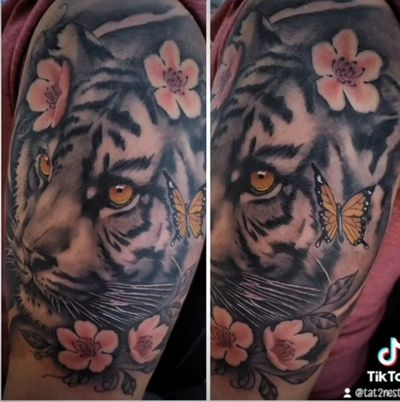

Black and grey lasts longer. That's the straight answer, and I'll give it to you even though I make my living on both. Black ink is carbon, carbon does not change color, and most colored pigments are more complicated molecules that light works against over the years.
That's only half of it though. Plenty of pieces come out weaker in black and grey, and I'll tell you so at the consultation instead of talking you into my favorite lane. What holds up isn't only a pigment question. It's a design question, and the design decides more than the bottle does.
Why black holds its tone
Black holds because of what it's made of. The black in my machine is carbon ground fine and carried in a liquid, and carbon is an element. There's nothing in it for light to take apart into something else, so black stays black.
What changes is intensity, not identity. A black and grey piece at ten years reads softer than it did at ten weeks, but it doesn't read like a different tattoo. If you've seen very old black work with a blue or green cast to it, that's a conversation about what was in bottles forty years ago, and it isn't what's in mine.
The second reason has nothing to do with chemistry. Black and grey is built out of the difference between black, grey, and the open space I deliberately leave alone. When the whole piece softens a fraction, every one of those relationships softens together and stays in the same order. A face still reads as that face. That's why portraits are the subject I argue hardest about.

Which colors shift, and which ones hold
Color shifts because a colored pigment is a molecule doing a job, and light slowly works against it. But treating "color" as one thing is lazy, because some pigments hold far longer than others and you should know which is which before you pick a palette.
- Blues and greens in the phthalocyanine family are among the more light-stable pigments made anywhere. The same family shows up in car finishes and printing ink. I'm comfortable running these across large areas.
- Reds sit in the middle. A deep red keeps reading as red even once it loses punch, which is what matters. A bright hot red has further to fall before it stops looking like the color you asked for.
- Yellows and oranges are usually the first real color to lose intensity. I use them as accents and I don't let them carry the structure of a piece.
- White and pastels go first, every time. A pastel is a color cut with white, so it inherits white's weakness. Those bright white hits that make a color piece pop are the part I plan around, not the part I lean on.
Sun exposure speeds all of that up and does almost nothing to carbon. A color sleeve riding a forearm in an open truck window all summer is on a different clock than the same sleeve on a ribcage. Worth hearing before you commit to full color.
Black and grey vs color, head to head
Here's the comparison the way I'd give it to you across the counter. Neither column wins. They answer different questions.
| Black and grey | Color | |
|---|---|---|
| What the pigment is | Carbon, an element | Pigment molecules, mostly organic |
| How it reads in ten years | Softer, same picture | Softer, and some hues have drifted |
| What carries the image | Contrast and value | Hue, plus whatever contrast you built in |
| Time in the chair | Fewer passes | More passes, usually more sessions |
| Cost at the same size | Lower, it's fewer hours | Higher, it's more hours |
| Subjects it suits | Faces, statuary, drapery, lettering, smoke, clouds | Feather work, big cats, florals, anime |
What I put in black and grey
Portraits, religious work, lettering, and most memorials go in black and grey. All four are built on tone rather than hue, so color would sit on top as decoration instead of doing the work.
A face is light and shadow. Add color to a portrait and you have made the piece lean on a pigment that drifts while the tonal structure underneath it doesn't. Religious pieces are the same story: statuary, drapery, rays of light, and hands are tonal subjects, and the tradition they come out of is carved stone and charcoal. Memorials I push toward black and grey for a plainer reason. A memorial has to read the same in twenty years as it does the week you get it, and carbon is what gives you that.
Black and grey Chicano realism is my signature, and its whole language came out of limits. It came up in California in the 1970s, out of prison work where one ink and a fine needle were what you had, and it moved into East LA shops from there. Artists learned to pull an enormous range out of black thinned down into greys. That's why the style holds up. It was never depending on anything but carbon. I go deeper on it in the Chicano style guide.
What genuinely wants color
Aztec feather work, big cats, florals, and anime want color, and I'll say so even when the client walked in asking for black and grey. In those subjects the hue isn't decoration, it's the information.
Take Aztec and cultural work. A warrior's headdress is quetzal feather green, and the mosaic work that tradition is known for is turquoise. Strip the color out and you've drawn the shape of the thing without saying what it was. Here's the honest exception in the same breath: the Sun Stone was carved out of basalt, so a sun stone medallion reads completely right in grey, because grey is what it actually is.

Big cats, wolves, and fish are the other clear case. An amber eye or the orange of a tiger is doing identification work that grey can't do, and color realism earns its extra hours when an animal's color is the point of the animal. Anime is simpler still. It was drawn in color, the reference is in color, and a grey version is a version of somebody else's design they didn't draw.
The middle path I use most
Most of my work is neither one nor the other. It's a black and grey composition with one element carrying all the color, and it's what I steer people toward more than any other option.
It works for three reasons. The color has somewhere to be the loudest thing in the frame instead of competing with four other loud things. The grey around it makes a small amount of color hit far harder than a fully saturated piece does. And if that element loses intensity over fifteen years, the composition still stands, because everything holding it up is carbon.
In practice that's a tiger in black and grey with the blossoms in pink. A grey sleeve with one red rose in it. A memorial where the only color in the whole piece is a jersey or a flag. Eyes left their real color inside an otherwise grey portrait.

What color costs you
Color costs more because it takes more hours, not because the ink is expensive. Packing saturated color takes more passes over the same area than laying grey does, so a large color piece usually needs more sessions than a black and grey piece of the same size. My rate is $150 an hour, a deposit books the date, and a full color half sleeve is a multi-session commitment. I would rather you hear that at the counter than find out at session three. I break down how I price work in the piece on prices around the south suburbs.
Quality takes time. Excellence takes experience. And neither one comes cheap. I'm not the artist for bargain hunters.
How to decide on yours
Ask yourself three questions and the answer usually picks itself. I will walk through them with you anyway, but you will get more out of a consultation having thought about them first.
- Is this subject about tone or about hue? A face, a statue, praying hands, and a piece of script are tone. A quetzal headdress, a tiger, and a sunflower are hue.
- Does the color mean something specific? A team's colors, a flag, the green in the feather work, the exact brown of somebody's eyes. If the color carries meaning, it earns the hours.
- Where is it going? A forearm and a ribcage are on different clocks for how long saturated color keeps its punch.
Bring me your reference, your placement, and your budget, and I'll tell you what I'd do with it, including when the answer is that your idea won't work the way you're picturing it. You can book a consultation here or call the shop at (708) 770-2754. We're at 5920 W 111th St in Chicago Ridge, Monday through Saturday, 12pm to 7pm.
Quick answers
Do black and grey tattoos last longer than color tattoos?
Generally yes. Black ink is carbon, an element that light cannot break down into something else, so it keeps its tone and simply reads softer with time. Most colored pigments are more complicated molecules that drift as the years go by.
Which tattoo colors lose their punch first?
White and pastels go first, because a pastel is a color cut with white and inherits that weakness. Yellows and oranges lose intensity next. Blues and greens in the phthalocyanine family hold the longest of any color.
Should a portrait tattoo be black and grey or color?
Black and grey. A face is built out of light and shadow rather than hue, so adding color means leaning the piece on a pigment that drifts while the tonal structure underneath it does not.
What tattoo subjects genuinely need color?
Aztec feather work, big cats, florals and anime. A warrior's headdress is quetzal green and the mosaic work is turquoise, so the hue is carrying information rather than decorating. When the color means something, it earns the extra hours.
What is the middle path between black and grey and color?
A black and grey composition with one element carrying all of the color, like a grey tiger with the blossoms in pink. The surrounding grey makes a small amount of color hit much harder, and the carbon structure still holds the piece up if that one color softens over the years.